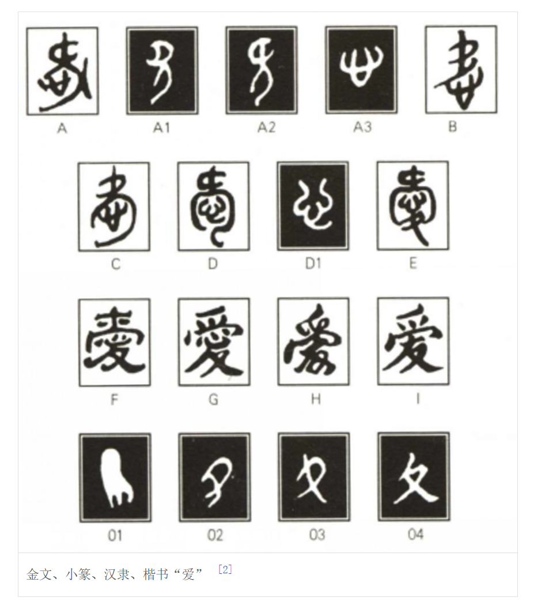
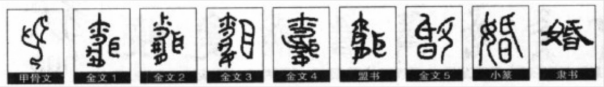
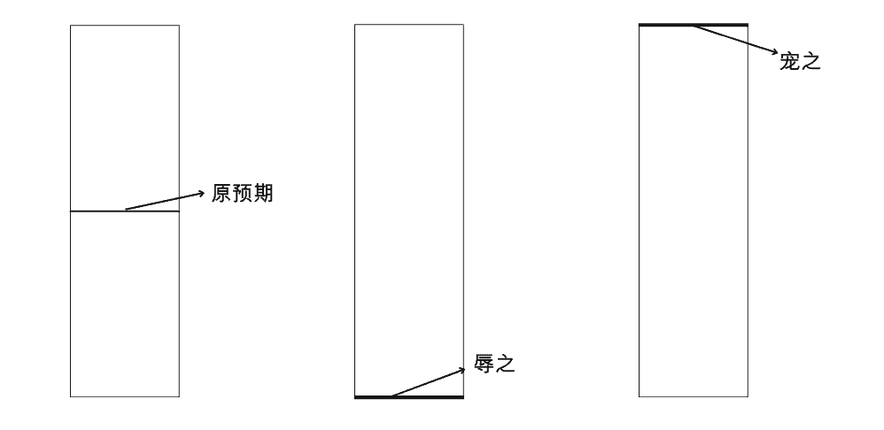

2024-11-19
2024-11-19  13:55
13:55博弈
我们将其理想化，假如每个人都有两个选择，那么当两个人博弈时就有4种可能，3人8种，4人16种，是呈指数级上升的。在现实生活中，每个人或每个利益方往往会有多种选择，如果想要将事情复杂化，就让更多的人或利益方参与进来。如果想要事情简单化，就保留必要利益方就行。举个例子，消防来检查说消防不合格，要求整改。一般来讲是要掏你兜了，如果你想少掏点或者不掏，怎么办？可以找个施工团队，与其签订合同，要求能做到通过消防检验，否则不付钱，直到通过为止。这时候你就把施工方拉进你和消防检查人员的博弈中，使得事情复杂化，还能转移你和消防检查人员之间的部分矛盾。
爱
从字形上看，爱是两个人彼此用心一起经营好一个家。用心和经营两词就可以衍生出很多意思。有爱就有恨。爱，在意识中。
婚姻
从字形上看，婚涉及到过日子，传承。可有爱，可无爱。姻，姻缘、联系的意思。
时间
时间是用来描述变化的。假如宇宙是静止的，就不需要时间去描述，因为怎么描述都是一样，多次描述就没有意义。事物是变化的，我们描述变化，将其区分为变化前后。时间在流逝，不是我们感受到了时间，是我们感受到了变化。此时此刻，你想象一下，世界停在了这个状态，一年后解封，一年后的你会知道已经是一年后了吗？
朋友
交朋友。有来有往叫交。单向的叫连。
人生
人生的意义是什么？我们可以将人生切割为多个时间段，可以是1天，1周，一月。在每个片段中，你活着的目的是什么？这就是那个时间段活着的意义。人生的意义就是多个时间段的意义的总和，这个和不是简单的相加。
众生平等
参考文章↗《庄子》-齐物论
信仰
存未知而有信。这个世界上有石头，会有信不信的讨论吗？无有信无不信。有神论和无神论，很少有彻底的有神论者和无神论者。所谓的神，亦在六道中，未脱离因果轮回。若有人通过打坐见到了六道是如何轮回的，还会去纠结有没有神吗？佛教、基督教、法轮功等我目前了解到的具备一定规模的宗教都是要求信众要行善的，世间有因果，断无善恶。
政治
权力的争夺与运用
宠辱若惊
何为惊？与原预期相差较大则惊。如何使用？先断预期，如果你能使用的手段不足以使其预期产生较大的波动，就先抬高或拉低其预期，抬或拉到什么程度需要视情况而定，大惊大拉，小惊小拉。
女权
求女权无女权，得女权无女权
怪谁
如果有一天，你生活中过得不好，遭受到了不幸，你愤懑，那你要归咎于自己还是谁？如果你归咎于父母没给你好的条件，那谁又影响了你的父母？父母的父母，父母的朋友，你自己，陌生人，一块石头，一粒沙子，一粒尘埃......，在继续推，父母的父母怪谁？父母的朋友怪谁？陌生人怪谁？推到最后，在这个同一共业的宇宙里的一切都逃脱不了干系。一切都得怪，还有怪吗？怪都没了，哪里还有怪的对象。
三观
世间岂有是非善恶？谁是谁非，谁善谁恶？三观人品亦无好坏之分。观从何来？从心来？有心否？无心。无心但可观，观非观故。